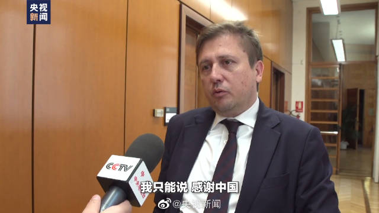

危机可怕不可怕。非常可怕。资产价格会大幅下跌。但有一个有意思的问题不知道你是不是注意过。在危机中买入，即使没有买在最低，几年后也赚好多。回头看，危机都是好的投资机会。当然，两个需要注意的。第一，别上杠杆第二，注意买入节奏
刚看到有朋友说，有人到处散发发车信息，尤其是在一些大平台上。这就是公开计划的问题之一。按理说投资应该静悄悄的，尤其是买入的时候，根本不应该让人知道你买什么。当然，基金比股票好很多。基金只会影响短期，长期还是会跟净值走。但是短期也受不了，尤其是现在QDII纷纷限购，弄大了以后谁都买不到。希望大家不要再传播了。第一个是上面说的投资本身问题，另一个是很多人没有受到风险教育和提示，根本不适合。最后不按照仓位买，出问题了又要骂人，真的受不了。
回复@彩云朵朵cll:智商情商都是负值的才会到别人家做客的时候说别人不好，说别人家刚生的孩子难看。当然，我这里倒是经常见到这样的人。//@彩云朵朵cll:我们是外人，人家回去跟内人才会说心里话的@央视新闻:【#意大利卫生部官员感谢中方树立榜样#】当地时间9日晚，中国多位专家会同世卫组织与意大利卫生部进行视频会议，介绍疫情防控经验。会后，意大利卫生部副部长表示，中国最先应对了新冠肺炎疫情，其抗击疫情的经验对世界来说非常重要。感谢中国，让我们迅速获知疫情信息、为我们树立了抗击疫情的榜样。（总台记者邓宗宇） 央视新闻的微博视频 387万次播放 01:13
我们的媒体采访，包括来国内开会的各种国外专家，都会说这些面儿上的，我们爱听的话。他们的真实想法，得听他们回去跟他们的媒体怎么说。@央视新闻:【#意大利卫生部官员感谢中方树立榜样#】当地时间9日晚，中国多位专家会同世卫组织与意大利卫生部进行视频会议，介绍疫情防控经验。会后，意大利卫生部副部长表示，中国最先应对了新冠肺炎疫情，其抗击疫情的经验对世界来说非常重要。感谢中国，让我们迅速获知疫情信息、为我们树立了抗击疫情的榜样。（总台记者邓宗宇） 央视新闻的微博视频 387万次播放 01:13
昨天这个微博基本是美股最低点发的。发完了就拉起来。因为那真的是一个强支撑@ETF拯救世界:美股现价是一个十年强支撑。如果撑不住，十年上升趋势打破。还是之前说过很多次的，我认为未来几年美股是波动市，不会有大的涨幅。2028-2029回头看，点位基本与现在差不太多。但是波动会很大，低位买入收益率还是会有保障的。